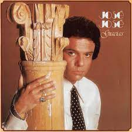

La nave de olvido | Vamos a darnos tiempo | El triste
Espera
Aún la nave del olvido no ha partido
No condenemos al naufragio lo vivido
Por nuestro ayer, por nuestro amor, yo te lo pido
Espera
Aún me quedan en mis manos primaveras
Para colmarte de caricias todas nuevas
Que morirían en mis manos si te fueras
Espera un poco, un poquito más
Para llevarte mi felicidad
Espera un poco, un poquito más
Me moriría si te vas
Espera un poco, un poquito más
Para llevarte mi felicidad
Espera un poco, un poquito más
Me moriría si te vas
Espera
Aún me quedan alegrías para darte
Tengo mil noches de amor que regalarte
Te doy mi vida a cambio de quedarte
Espera
No entendería mi mañana si te fueras
Y hasta te admito que tu amor me lo mintieras
Te adoraría aunque tú no me quisieras
Espera un poco, un poquito más
Para llevarte mi felicidad
Espera un poco, un poquito más
Me moriría si te vas
Espera un poco, un poquito más
Para llevarte mi felicidad
Espera un poco, un poquito más
Me moriría si te vas
Espera un poco, un poquito más
Para llevarte mi felicidad
Espera un poco, un poquito más

Qué dificil es
Cuando las cosas no van bien
Tú no estás feliz
Y eso me pasa a mí, también
Porque hemos perdido la frescura del amor
El respeto por los dos
Discutiendo a cada instante
Sin razón
Qué dificil es
Hablarte y tú no comprender
Conversar lo mismo y enfadarnos
Otra vez
qué no me dejas
Que me vaya por un tiempo
Sin decirme que, al momento
Te vas a quitar la vida, si me voy
Pero, antes, déjame decirte que te quiero
Que tu amor es la única cosa que yo tengo
Y me voy de tu lado porque no quiero perderlo
Lo que tú y yo necesitamos sólo es tiempo
Tiempo para poder curar nuestras heridas
Tiempo para empezar, de nuevo, nuestras vidas
Tiempo para saber si tú me necesitas
Tiempo para saber si me quieres o me olvidas
Qué difícil es
Hablarte y tú no comprender
Conversar lo mismo y enfadarnos
Otra vez
Por qué no me dejas
Que me vaya por un tiempo
Sin decirme que, al momento
Te vas a quitar la vida, si me voy
Pero, antes, déjame decirte que te quiero
Que tu amor es la única cosa que yo tengo
Y me voy de tu lado porque no quiero perderlo
Lo que tú y yo necesitamos, solo es tiempo
Tiempo para poder curar nuestras heridas
Tiempo para empezar, de nuevo, nuestras vidas
Tiempo para saber si tú me necesitas
Tiempo para saber si me quieres o me olvidas
Qué triste fue decirnos adiós
Cuando nos adorábamos más
Hasta la golondrina emigró
Presagiando el final
Qué triste luce todo sin ti
Los mares de las playas se van
Se tiñen los colores de gris
Hoy todo es soledad
No sé si vuelva a verte después
No sé qué de mi vida será
Sin el lucero azul de tú ser
Que no me alumbra ya
Hoy quiero saborear mi dolor
No pido compasión ni piedad
La historia de este amor se escribió
Para la eternidad
Qué triste todos dicen que soy
Que siempre estoy hablando de ti
No saben que pensando en tu amor, en tu amor
He podido ayudarme a vivir
He podido ayudarme a vivir
Oh oh oh oh
Oh oh oh oh
Hoy quiero saborear mi dolor
No pido compasión ni piedad
La historia de este amor se escribió
Para la eternidad
Qué triste todos dicen que soy
Que siempre estoy hablando de ti
No saben que pensando en tu amor, en tu amor
He podido ayudarme a vivir
He podido ayudarme a vivir
He podido ayudarme a vivir